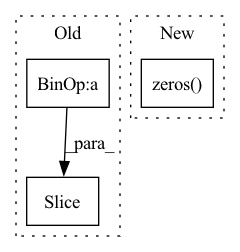

Pattern ID :7931
Before Change
reg[k] = ct - ct_int
reg_mask[k] = 1
cat_spec_wh[k, cls_id * 2: cls_id * 2 + 2] = wh[k]
cat_spec_mask[k, cls_id * 2 : cls_id * 2 + 2] = 1
gt_det.append([ct[0] - w / 2, ct[1] - h / 2,
ct[0] + w / 2, ct[1] + h / 2, 1, cls_id])
After Change
target_domain_img = target_domain_img.transpose(2, 0, 1)
gt_det = np.array(gt_det, dtype=np.float32) if len(
gt_det) > 0 else np.zeros( (1, 6), dtype=np.float32)
ret = {
"input": inp,
"hm": hm,In pattern: SUPERPATTERN
Frequency: 3
Non-data size: 3
Instances Fragment ID: 28179535
Project Name: scheckmedia/centernet-uda
Commit Name: 0022f53057b7af90ffecca0d10d068fe88c6ae66
Time: 2020-07-30
Author: tobias.scheck@etit.tu-chemnitz.de
File Name: datasets/coco.py
M Class Name: Dataset
N Class Name: Dataset
M Method Name: __getitem__(2)
N Method Name: __getitem__(2)
M Parent Class: data.Dataset
N Parent Class: data.Dataset
M File Name: datasets/coco.py
N File Name: datasets/coco.py
M Start Line: 103
M End Line: 143
N Start Line: 78
N End Line: 173
Before Change
x_ft[:, :, :self.n_modes, :self.n_modes], self.fourier_weight[0], self.fourier_weight[1])
out_ft[:, :, -self.n_modes:, :self.n_modes] = self.complex_matmul_2d(
x_ft[:, :, -self.n_modes :, :self.n_modes], self.fourier_weight[2], self.fourier_weight[3])
out_ft = torch.complex(out_ft[..., 0], out_ft[..., 1])
After Change
x_ftx = torch.stack([x_ftx.real, x_ftx.imag], dim=4)
// x_ft.shape == [batch_size, in_dim, grid_size // 2 + 1, grid_size, 2]
out_ft = torch.zeros( B, I, N // 2 + 1, M, 2, device=x.device)
// out_ft.shape == [batch_size, in_dim, grid_size // 2 + 1, grid_size, 2]
out_ft[:, :, :self.n_modes, :] = self.complex_matmul_x_2d(
x_ftx[:, :, :self.n_modes, :], self.fourier_weight[1]) Fragment ID: 28179531
Project Name: alasdairtran/fourierflow
Commit Name: 659a21db22124687b87c0b5ab0f4afdebbf139b3
Time: 2021-07-28
Author: alasdair.tran@gmail.com
File Name: fourierflow/modules/fourier_deq.py
M Class Name: SpectralConv2d
N Class Name: SpectralConv2d
M Method Name: forward(3)
N Method Name: forward(3)
M Parent Class: nn.Module
N Parent Class: nn.Module
M File Name: fourierflow/modules/fourier_deq.py
N File Name: fourierflow/modules/fourier_deq.py
M Start Line: 112
M End Line: 126
N Start Line: 88
N End Line: 145
Before Change
cls_tokens = repeat(self.cls_token, "() n d -> b n d", b=b)
x = torch.cat((cls_tokens, x), dim=1)
x += self.pos_embedding[:, : (n + 1)]
x = self.dropout(x)
x = self.attn_layers(x, **kwargs)After Change
x = torch.cat((cls_tokens, x), dim=1)
h, w = torch.tensor(img.shape[2:])//p
pos_emb_ind = repeat(torch.arange(h)*(self.max_width//p-w), "n -> (n b)", b=w)+torch.arange(h*w)
pos_emb_ind = torch.cat((torch.zeros( 1) , pos_emb_ind+1), dim=0).long()
x += self.pos_embedding[:, pos_emb_ind]
x = self.dropout(x)
Fragment ID: 28179525
Project Name: lukas-blecher/latex-ocr
Commit Name: 5d15dcb665d370fb77e6ae5589edb91c403ac0bb
Time: 2021-01-28
Author: luk.blecher@gmx.de
File Name: models.py
M Class Name: ViTransformerWrapper
N Class Name: ViTransformerWrapper
M Method Name: forward(2)
N Method Name: forward(2)
M Parent Class: nn.Module
N Parent Class: nn.Module
M File Name: models.py
N File Name: models.py
M Start Line: 49
M End Line: 49
N Start Line: 44
N End Line: 55